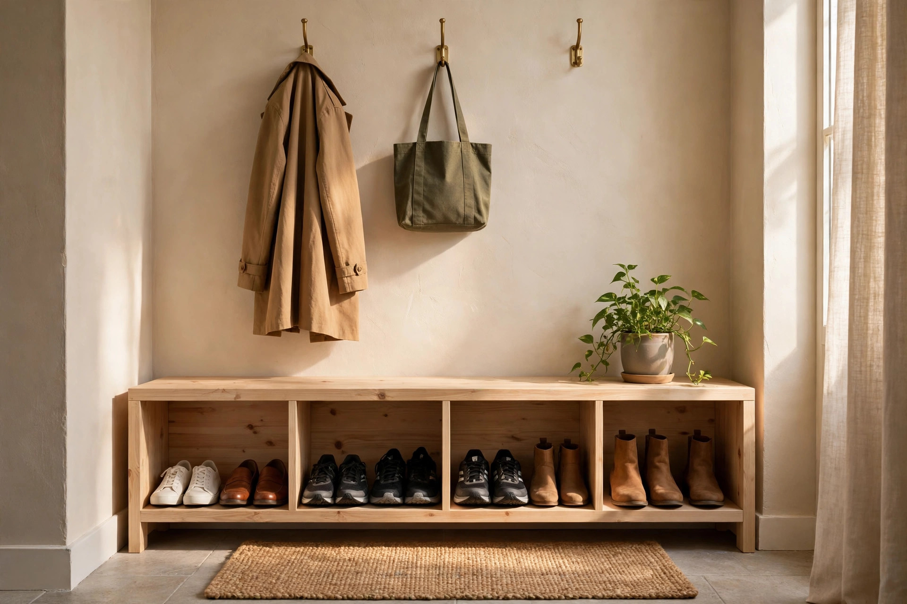

Small Space Storage & Organisation
Small Apartment Shoe Storage Ideas by the Door
Intro
Shoes are the first thing a small apartment loses control of. One pair by the door becomes four, then eight, and suddenly the entrance is a pile of trainers, boots and sandals that trips everyone who walks in. The problem is not how many shoes you own — it is that they have nowhere to go.
This guide has 12 shoe storage ideas for the space by the door — slim racks, wall pockets, a tray and a bench — most under $25 and none needing a big hallway. Each idea lists what it costs, and most need no drilling. Start with the pair you wear every day, and give every other pair a home.

1. A slim shoe rack that hugs the wall — $15–$25
A slim shoe rack no deeper than 20 cm fits behind the front door or along the hallway wall without blocking the walkway. Three tiers hold six to nine pairs, and the top shelf holds keys and post. Choose an open rack, so shoes dry and you can see every pair at a glance. A rack with a slanted shelf keeps tall boots upright.
2. A boot tray for wet and muddy shoes — $8–$12
A shallow tray by the door catches mud, rain and snow before it reaches the floor. One tray holds two pairs, and a second tray stacks underneath when it is not needed. Pick a tray with a raised edge, so water stays inside. Empty it once a week, and the hallway floor stays clean all winter.
3. Over-door shoe pockets — $10–$15
A clear pocket organiser hung over the inside of the front door holds up to twelve pairs of flat shoes, sandals and trainers. It uses dead space on the door and costs about $12. Keep the pairs you wear most at eye level, and the rest higher up. Clear pockets mean you can find the right pair without opening every pocket.
4. A bench with shoe storage underneath — $30–$50
A low bench by the door gives you somewhere to sit while you put shoes on, and the space underneath holds four to six pairs. A bench with two open cubbies keeps shoes sorted — one cubby per person. Add a cushion on top, and the bench doubles as a place for bags. Measure the hallway first: the bench should leave at least 70 cm of walking space.
5. A wall-mounted shoe shelf — $12–$18
Two short floating shelves by the door hold the two pairs you wear most, up off the floor. They cost about $15 and fit with adhesive strips or two small screws. Keep the shelves at ankle height, so shoes slide on and off easily. A shelf above them holds keys, sunglasses and the dog lead.
6. Stackable shoe boxes — $12–$20
Clear stackable boxes turn a messy pile into a neat tower in the corner by the door. Four boxes cost about $15 and hold four pairs, stacked two high. Label each box or use clear fronts, so you never open the wrong one. Boxes also protect good shoes from dust and from being stepped on.
7. A shoe cabinet that looks like furniture — $40–$60
A slim shoe cabinet with tip-out drawers looks like a sideboard and hides twelve pairs behind closed doors. It is deeper than a rack, so check the hallway width first — it needs about 25 cm of depth. Keep everyday shoes in the top drawer and seasonal pairs below. A cabinet with a mirror on the front does two jobs at once.
8. Hooks for slippers and flip-flops — $5–$8
A row of four adhesive hooks by the door holds slippers, flip-flops and house shoes off the floor. Four hooks cost about $6 and take five minutes to fit. Give each person one hook, so slippers never end up in a pile. Hooks also work inside a wardrobe door for spare pairs.
9. A shoe basket per person — $6–$10 each
One small basket per person by the door holds that person's everyday pair, and nothing else. Three baskets cost about $18 and stop shoes from mixing into one big pile. Choose baskets with handles, so they can be carried to the wardrobe when guests come. A basket also catches the odd sock and the shoehorn.
10. Under-bench baskets for off-season shoes — $8–$12
The shoes you are not wearing this season do not belong by the door. Two lidded baskets under the bench or on top of the wardrobe hold sandals in winter and boots in summer. Two baskets cost about $10. Label them by season, and swap the contents twice a year — a five-minute job that frees the entrance.
11. A shoe rack inside the coat cupboard — $10–$15
If your flat has a coat cupboard by the door, a two-tier rack inside it hides shoes completely. The rack costs about $12 and leaves the hallway clear. Keep the door closed and the entrance looks tidy even when the cupboard is full. Add a small motion light inside, so you can see the shoes in a dark cupboard.
12. One pair out, the rest away — $0
The cheapest idea costs nothing. Keep one pair per person by the door — the pair you will wear tomorrow — and put every other pair in the wardrobe. When a new pair comes in, an old pair goes out. In a small flat, this one rule does more than any rack: the entrance stays clear because only the shoes in use are ever there.
Conclusion
Shoe storage by the door is not about buying a bigger rack — it is about giving every pair a place and keeping only the pair in use by the entrance. A slim rack, a tray and a bench can hold a whole household's everyday shoes in less than a metre of wall. Start with the tray and the one-pair rule today, and the pile by the door will be gone by tonight.
Budget recap
- Slim rack + boot tray: ~$30 - Over-door pockets + hooks: ~$18 - Bench with storage: ~$40
Total for a tidy entrance: ~$30–$50 — or $0 with the one-pair rule.
Pinterest pin titles
- Small Apartment Shoe Storage Ideas by the Door — 12 Neat Fixes
- Shoes Piling Up by the Door? 12 Fixes That Actually Work
- Small Entrance, No Mess: 12 Shoe Storage Ideas Under $25